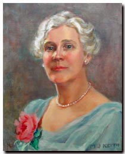
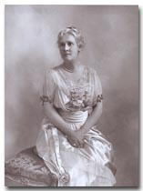
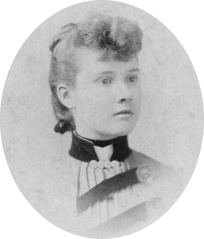
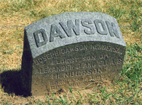
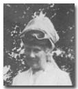
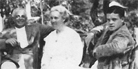
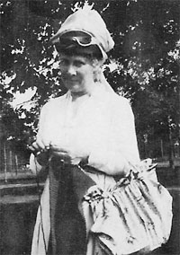
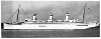
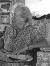

|
 Click the image to enlarge. |
|
Ella Margaret BrownElla Margaret Brown was born in New York on February 28, 1869. She married Alexander D. Henderson on February 17, 1892. They had two children: Alexander D. Henderson Jr. and Girard Brown Henderson. |
|
| Important Facts | |
| February 28, 1869 | Ella Margaret Brown was born in the New York. She is the daughter of William Little Brown and Margaret G. Lamb. Source: 1880 Census, Washington, District of Columbia; Roll T9_123; Family History Film: 1254123; Page: 102.4000; Enumeration District: 48; Image: 0206. |
 Ella Brown-Henderson |
| June 30, 1870 | Ella M. Brown is listed in the 1870 US Federal Census living with her parents: William Brown (plate printer - 25), Margaret J. Brown (25), Ella M. Brown (2), William J. Brown (4 mo.), and Josephine Brawner (servant - 25). Source: 1870 Census, Washington, Ward 1, Washington, District of Columbia; Roll: M593_123; Page: 52; Image: 109. | |
1873 |
Her sister Sarah E. Brown, "Aunt Sadie" was born in Washington D.C. Source: 1880 US Federal Census, Washington, District of Columbia. | |
| 1874 | Her father, William L. Brown, of the City of Washington, D.C., died in 1874. His will is dated May 23, 1874 and recorded in Brooklyn on August 21, 1874. Source: King's County Surrogate's Court. | |
| 1880 | The 1880 U.S. Census lists Ella Brown (12) living in Washington D.C. with her family: Margaretta (35), Ellen (12), William J. (10), and Sarah E. (6), Aunt Susan Lamb (33), maternal grandmother Sarah Lamb (61), along with 5 boarders. Source: 1880 Census Place: Washington, District of Columbia; Roll: T9_123; Family History Film: 1254123; Page: 102.4000; Enumeration District: 48; Image: 0206. | |
| The family moved to 269 Quincy Street, Brooklyn, New York. Source: Brooklyn Marriage License Bureau: Mary's Family Connections, 1979, page 86. | ||
| February 17, 1892 | At age 23, Ella M. Brown married Alexander D. Henderson at the Emmanuel Baptist Church, 291 Ryerson Street, Brooklyn by the Rev. John Hampstone. Source: Record of the Brooklyn Marriage License Bureau and the February 18th edition of the Brooklyn Daily Eagle; Certificate Number #1892, New York City Brides Record Index Results. | 
|
| February 18, 1892 | The marriage announcement appeared in the Brooklyn Eagle Newspaper. It said the best man was John D. Schuller and the maid of honor was Miss Sadie Brown. The bride wore a costume of pearl silk, and traine, and carried a bouquet of pink roses. She was given away by her brother, William Brown. An informal reception followed, during which the newly married couple departed on an extensive honeymoon to Canada and other objective points. Source: The Brooklyn Eagle Newspaper. | |
|
1892 |
Alexander and Ella set up housekeeping in the Flatbush district of Brooklyn, New York. They rented a three-story brownstone house at 142 Midwick Street in Brooklyn. Source: "So Long It's Been Good To Know You", pg. 2, Jerry Henderson. | |
|
January 4, 1893 |
Their first child, Joseph Dawson Henderson, was born. Source: Green-Wood Cemetery tombstone. |  |
| November 5, 1893 | Their first child, Joseph Dawson Henderson, died in infancy (in highchair), which was a traumatic experience for a young married couple. Source: "So Long It's Been Good To Know You", Jerry Henderson. | |
| November 9, 1893 | On November 9th, their son was buried in the family plot at the Green-Wood Cemetery at 500 25th St., Brooklyn, New York - Lot 13244, Section 88. The tombstone reads: Joseph Dawson Henderson Eldest son of Alexander D. and Ella B. Henderson. Source: Green-Wood Cemetery Records. | |
| February 16, 1895 | Alexander D. Henderson Jr. was born in Brooklyn, New York. Source: "So Long It's Been Good To Know You", pg. 3, Jerry Henderson. |
 Ella Brown |
| April 24, 1896 | The Daily Standard Union reported that Mr. and Mrs. Alexander D. Henderson were at the wedding for Ella’s brother William J. Brown and Ruth Doughty. William was an engraver with the American Bank Note Company in Brooklyn. The sister of the bridegroom, Miss Sadie Brown, was maid of honor. |
|
February 25, 1905 |
Girard Brown Henderson was born. The parents were listed as living at 171 Midwood Street, Brooklyn, New York. Source: New York State Birth Certificate. | |
1905 |
The family came to Suffern, New York as summer visitors and were boarders in the Tilton Hotel , which was on the property now owned by the Avon Products Company. Source: Mary's Family Connections, 1979, pg. 85. | |
|
1909 |
They built a large Georgian type house on the hill near the Nyack Turnpike in Suffern, New York. The household was accommodated by a colored butler, James, and a household cook. Mrs. Henderson (Ella Brown) had a fourteen acre working farm with a cow, large vegetable garden, stocked fish, and a huge greenhouse. Source: Mary's Family Connections, 1979, pg. 85. |  Alex Sr., Ella, Alex Jr.James McCreery & Co. Photographic Studio New York, N. Y. |
|
1916 |
To help expand the business, Mr. Henderson invested $25,000 in the California Perfume Company. Mr. Henderson’s capital as well as his business partnership with Mr. McConnell must have been vital to the business at that time, as Mr. Henderson acquired one-quarter of the entire stock of the company; and both men, and their families, prospered. Source: Mary's Family Connections, 1979, pg. 91. | |
| 1917 | Ella enjoyed needle work as you can see from the picture on the right. |  Ella B. Henderson |
|
1920 |
Mr. Henderson built a house for his son, Alexander Jr. and his wife in Suffern, New York, across the road from their own house. Source: Mary's Family Connections, 1979, pg. 85. | |
February 11, 1920 |
The 1920 U.S. Census lists Alexander D. Henderson (55), Ella B. Henderson (52), Alexander D. Henderson Jr. (25) and James Wynne (40) their butler living on South Monsey Road in Suffern, N. Y. Mr. Henderson's Father's birth place is listed as in South Carolina. Source: Ancestry.com. 1920 United States Federal Census. |
|
May 4, 1923 |
Mr. and Mrs. Henderson traveled to Boulogne-Sur-Mer, France on the ship Rotterdam. Source: Ancestry.com. New York Passenger Lists, 1820-1957 [database on-line]. Provo, UT, USA: Ancestry.com Operations, Inc., 2006. | |
| July 16, 1924 | Ella B. Henderson, treasurer of the Suffern Woman’s Club gave a gift of $200 to the Sun-Roxy Radio Fund to be used to provide head phones for disabled soldiers in US hospitals so they can enjoy music over the radio. Source: The Sun newspaper. | |
|
January 25, 1925 |
Her husband, Mr. Alexander D. Henderson Sr. died in Suffern, New York after a very short illness. His family and associates mourned him. Source: New York Death Certificate #5375 and the Suffern newspaper. |
Suffern, New York |
| September 4, 1925 | Mrs. Alexander D. Henderson paid $4,626 in income taxes for the eastern section of New York State. Source:The New York Times. | |
| A postcard was made of main Suffern house. The printing of the postcard reads: "Residence of Mr. A. D. Henderson, Suffern, N.Y." Source: Suffern Free Library, Suffern, New York; postcard; col.; 3 x 5 in. (7.7 x 12.7 cm.). | ||
| April 2, 1925 | Ella Henderson (57) and her son Girard Henderson (20) arrived in New York City sailing from Puerto Colombia Col. on the ship Carrillo. Source: New York, New York Passenger and Crew Lists, 1825-1996, index and images, FamilySearch. | |
| October 31, 1925 | Ella B. Henderson (57) and her son, Girard B Henderson, went from New York City on the ship Reliance, to Cherbourg, France. Source: Ancestry.com. New York Passenger Lists, 1820-1957. |
 1925 Ship Reliance |
| November 12, 1926 | It was announced in the New York Evening Post newspaper that that Mrs. Alexander D. Henderson leased a suite at the 277 Park Avenue Building. Source: New York Evening Post. | |
April 5, 1927 |
Ella B. Henderson was listed on the California Passenger and Crew list as traveling from Honolulu, Hawaii on ship Matsonia. Source: Ancestry.com. California Passenger and Crew Lists, 1893-1957 [database on-line]. Provo, UT, USA: Ancestry.com Operations Inc, 2008. | |
|
|
She went shopping at Abraham & Straus in Brooklyn, New York; and would take her daughter-in-law, Mary Henderson with her in the car with the chauffeur. Source: Mary's Family Connections, 1979, pg. 93. |
1929 Packard Limousine |
March, 26, 1929 |
Ella Henderson was listed as a passenger on the ship Carinthia going to Southampton, England. Source: Ancestry.com. UK Incoming Passenger Lists, 1878-1960 [database on-line]. Provo, UT, USA: Ancestry.com Operations Inc, 2008. | |
April 22, 1929 |
The Brooklyn Trust Company managed a trust fund containing 1105 units in the Composite Fund for Ella B. Henderson. Source: Alexander Dawson, Inc. paper. | |
|
1930 |
When the depression hit in 1930, Mr. McConnell cancelled the dividends on the Common stock of the California Perfume Company. Source:Mary's Family Connections, 1979, pg 97. | |
| April 15, 1930 | The 1930 U.S. Census lists Ella B. Henderson (63), James and Lucinda Winne her servants, living at Nyack Turnpike in Ramapo, Rockland, New York. The value of her home was listed at $100,000. The house had a radio. Source: 1930 Census, Ramapo, Rockland, New York; Roll: 1641; Page: 10A; Enumeration District: 38; Image: 30.0. | |
May 25, 1930 |
An ad appeared in the New York Times, offering the Suffern house for rent, "18-room residence, with servants' quarters, 4-car garage; grounds beautifully landscaped; 30 miles from New York City; estate 1 mile from main line Erie Railroad station. Relied to secretary of Mrs. A. D. Henderson Sr., 114 4th ave." Source: May 25, 1930; ProQuest Historical Newspapers The New York Times, pg. 191. | |
1930 |
She was listed as: Henderson, Mrs. A.D., Nyack Tpke, Suffern, N. Y. and Mr. & Mrs. Alex I. 141 E. 72. Source: NEW YORK SOCIAL BLUE BOOK--1930 - Names & Addresses of Prominent Residents. | |
October 6, 1930 |
Ella B. Henderson traveled to Naples, Italy on the ship Roma. Source: Ancestry.com. New York Passenger Lists, 1820-1957 [database on-line]. Provo, UT, USA: Ancestry.com Operations, Inc., 2006. | |
June 11, 1932 |
It was reported in the local newspaper that "Mrs. Alexander Henderson, of Nyack Turnpike, Suffern, took off today from Monsey Field in the plane owned and piloted by her son, Girard Henderson, of Cragmere." Source: Evening Rockland County Journal. | |
|
1933 |
Mr. McConnell offered to buy the common stock that Mrs. Henderson owned. Mrs. Henderson said "her husband had told her never to sell it". She later formed the Alexander Dawson Holding Company. Source:Mary's Family Connections, 1979, pg. 98. | |
April 13, 1933 |
Ella Brown Henderson was listed as passenger going to Palermo, Italy on the ship Saturnia. Source: Ancestry.com. New York Passenger Lists, 1820-1957 [database on-line]. Provo, UT, USA: Ancestry.com Operations, Inc., 2006. | |
December 17, 1935 |
The Alexander Dawson, Inc. (ADI) was incorporated and the certificate of incorporation was filed with the Secretary of State of Trenton New Jersey. Mrs. Ella B. Henderson transferred her securities she held to newly formed personal holding company in exchange for all the shares of ADI's stock. Source: ADI Certificate of Incorporation, 1935. | |
December 18, 1935 |
The first meeting between the board members of the Alexander Dawson, Inc. was held at 111 John Street, Manhattan, New York. Three directors were elected: Ella B. Henderson, Alexander D. Henderson, and Girard B. Henderson. Source: ADI Certificate of Incorporation, 1935. | |
| Mrs. Henderson lived part of her time at 277 Park Avenue, New York, and the rest of the time at her house in Suffern. Source: Mary's Family Connections, 1979, pg. 98. | ||
|
January 17, 1940 |
At 72, Mrs. Ella Brown Henderson died suddenly, at her home, Nyack Turnpike, Suffern, New York. Funeral services were held at her home on January 19, 1940, at 2 PM. Source: ProQuest Historical Newspapers The New York Times, pg. 23. | |
| January 19, 1940 | The Rampo Valley Independent posted an obituary saying "One of Suffern's finest residents dies suddenly". Source: Rampo Valley Independent. | |
| January 19, 1940 | She was creamated at the Garden State Crematory. Her cremated remains were mailed to the Wanamaker & Carlough Funeral Home on 1/20/1940. Source: Garden State Crematory records; Cremation #22894. | |
| Feb. 9, 1940 | The Will of Ella B. Henderson was described in the Rampo Valley Independent saying she left Mary Hendrickson of Suffern, a sister-in-law a $10,000 trust and a $20,000 trust to her sister, Sarah E. Brown of New York City. Source: Rampo Valley Independent. | |
March 1, 1940 |
A special meeting of the board of directors for Alexander Dawson Inc. was held in room 2707, at 111 John Street, Borough of Manhattan, New York City. In this meeting it was announced, “With deep sorrow, the death of Mrs. Ella B. Henderson on January 17, 1940, was recorded.” The board voted that Alexander D. Henderson was elected President of the Corporation and Girard B. Henderson was elected as Vice President and Treasurer. Source: 1940 ADI Board Minutes. |
 Sarah E. Brown |
abt. 1960 |
Her sister, Sarah E. Brown is seen in this picture opening a Christmas present at Alexander Henderson Jr's home in Florida. Mr. Henderson's grandchildren remember coming over for Christmas day and visiting their grandfather and Aunt Sarah. Source: Greg Henderson's recollections. | |
|
1962 |
Her sister, Sarah E. Brown died twenty years later. |